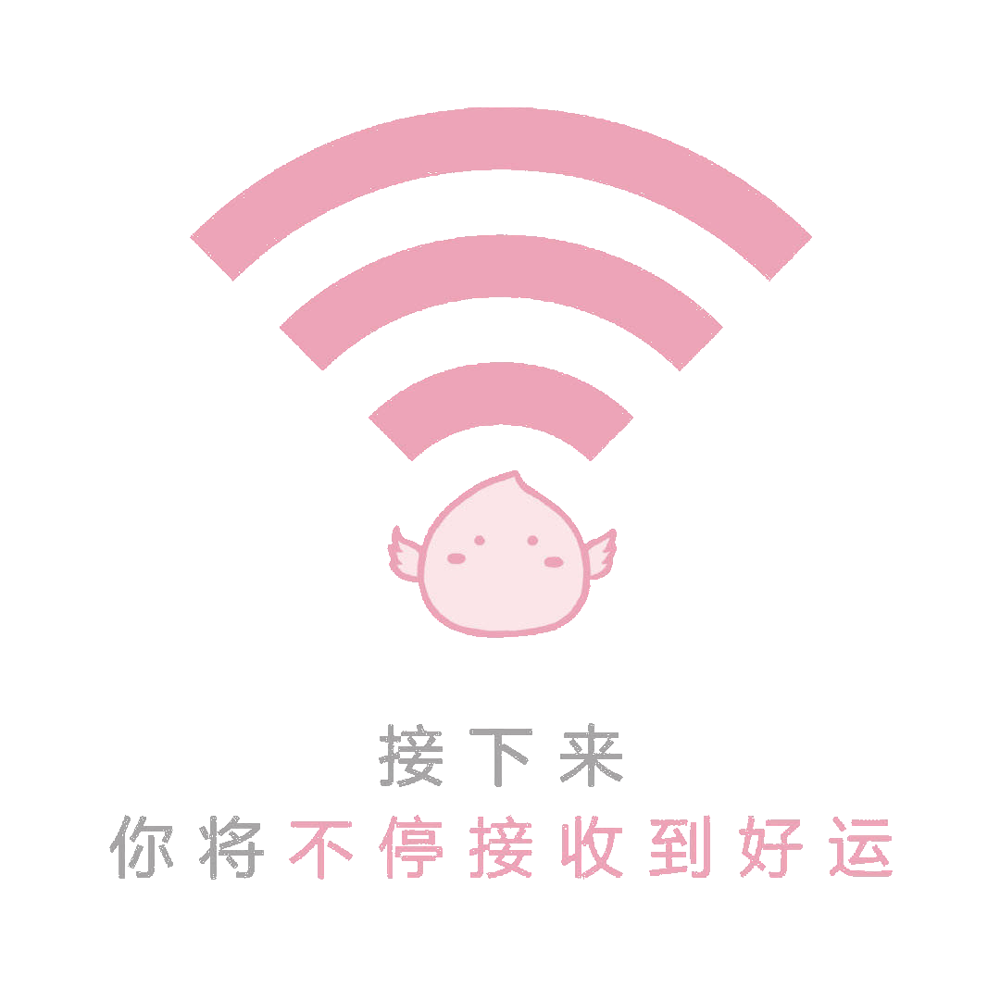

目录
- 目录
- 前言
- 一、绪论
- 二、生命的意义
- 三、幸福与你同行
- 四、价值观与人生发展
- 五、自我-人生的风向标
- 六、积极情绪
- 七、人格与命运
- 八、积极的身心关系
- 九、构建财富观
- 十、压力与管理
- 十一、积极的性心理
- 十二、积极恋爱关系
- 十三、积极人际关系
- 十四、积极人际关系
- 十五、文化的心理取向
- 十六、积极的家庭关系
- 十七、职业观
- 十八、寻求改变的方法
- 十九、美在心中
前言
本文我在大学时所学的一门课程 —— 积极心理学 的笔记，也包含了一些个人的理解，如有错漏欢迎指正。
一、绪论
积极心理学是什么
积极心理学(PositivePsychology)最早由塞里格曼(Seligman)提出，相对于传统心理学所研究的消极心理学注重于心理疾病的研究，积极心理学更加关注如何利用心理学提高精神生活的质量，使人们的生活更加幸福美满。
在日常生活中，对于心理学有两个常见的误解：
- 人一旦出现了困惑与烦恼，就是心理不健康。
- 我们的困惑和烦恼都是社会、家庭、工作、学习等外界压力带来的。
对前者，困惑和烦恼是很常见的，人并非全能全知，所以有困惑和烦恼也没什么大不了的呢。也不能说明心理不健康哦。
对于后者，困惑和烦恼有很大一部分可能是外界压力带来的，但也有一些是由内而外的，嗯？你说该怎么办呐？那就看看积极心理学是如何指导我们走向幸福的吧~
研究对象
- 个人积极的主观体验
- 个人积极的品质
- 群体的积极氛围
对待消极心理：
- 揭示性的研究思路(揭示危害)
- 建设性的研究思路(如何避免)
最后，积极心理学与传统心理学一样重在应用: 理论研究 -> 社会应用 是必由之路。
二、生命的意义
概念: 生命的意义是指人们对生存的目的、生命价值的解释。
未知生，焉知死 —— 知生是知死的前提
中国传统对生命的理解
佛典：
- 六根：眼、耳、鼻、舌、身、意
- 六尘：色、声、香、味、触、法
道教：真精、元神、元气不离身形，谓之生命。 ——
打破生死自然规律的生命观
三大思想特征：生命的本位、自然的关怀、超越意向
儒家：自然主义、现实的生命观 —— 立志、自我反省、爱人、学与知
李可染《三酸图》
三教合流：
- 苏东坡(左、儒家)：以教化正其行
- 佛印(中、佛家)：禁欲、行善减少痛苦
- 黄庭坚(右、道教)：人生美好、修行、世人心智未开、自寻烦恼
林语堂：中国人对生命的理解取决于他的情绪，顺境时心情好，相信儒家入世思想；蹉跎时心情差，退守道家养生、避世之道；逆境时绝望，相信佛家遁世哲学。 —— 误解，大意， (社会境遇)
外国对生命的理解
基督教：人 生而有罪，赎罪是人生命的目的、行善、宽恕、悯人
苏格拉底：人生命的意义在于不断的反省自己
其他不同观点：物质欲、利己欲、享受欲、虚无欲、宿命论、积极观、社会观
人生发展阶段理论
提出：埃里克森(E.H.Erikson，1902)
内容：
| 人生阶段 | 年龄 | 发展阶段 |
|---|---|---|
| 婴儿 | 0 − 1.5 | 信任与不信任的矛盾 |
| 童年期 | 1.5 − 4 | 获得自主感，避免怀疑感和羞耻感 |
| 学前期 | 4 − 6 | 主动感和内疚感 |
| 学龄前 | 6 − 11 | 勤奋感与自卑感 |
| 青春期 | 12 − 18 | 自我同一性和同一性混乱 |
| 成年早期 | 18 − 25 | 亲密感和孤独感 |
| 成年期 | 25 − 65 | 创造力和自我专注 |
| 老年期 | 65− | 自我满足感和绝望感
以超然的态度对待生命和死亡 |
马斯洛需要层次理论
| 需要层次 | 需要 | 比例 |
|---|---|---|
| 初级的生存需要 | 生理需求、安全需求 | $100\\%$ |
| 中级的社交需要 | 归属需求、尊重需求 | $40\\%$ |
| 高级成就需要 | 自我实现 | $5\\%$ |
人生的价值观(需要和欲望)
- 追求财富的生命观(人为财死、鸟为食亡)
- 追求利己的生命观(人不为己、天诛地灭)
- 追求享乐的生命观(人生得意须尽欢，莫使金樽空对月)
- 追求虚无的生命观(生命无常、生即是死)
- 追求宿命的生命观(听天由命，活就是苦)
- 追求积极的生命观(生命不息、奋斗不止)
- 追求社会的生命观(先天下之忧而忧)
幸福
幸福：工作满意度、生活满意度
托尔斯泰：“幸福的家庭，幸福都是相似的；不幸的家庭，各有各的不幸”
幸福感：幸福感是人类的综合心理感受。
心理取向理论
包括四个方面：社会取向、个人取向、积极取向、消极取向
生命意义的社会取向
社会取向：具有生命意义社会取向的人，是用社会贡献的价值、作用为解释标准来衡量和判断自我生命意义的人。
《左传》：太上有立德，其次有立功，其次有立言，虽久不废，此之谓不朽。
孔子、王阳明、曾国藩：树立高尚的道德情操(格物、致知)，为国为民建功(诚意、正心、修心)，为家为己争名(齐家、治国、平天下)，著书立说。
《孟子》：有所不为、而后可以有所为。
学会放弃：安逸、恬淡、轻松、欢乐
生命意义的个人取向
个人取向：用个人的生活质量作为解释标准，来衡量和判断生命的意义。
五福：长寿、富贵、康宁、好德、善终
长寿
| 卫生革命 | 时间 | 重点 |
|---|---|---|
| 世界第一次卫生革命 | 兴起于19世纪后半叶欧洲 | 针对传染疾病和寄生虫病 |
| 世界第二次卫生革命 | 开始于1979年 | 防止慢性病，改善生活方式 (遵守交通规则、不吸烟、少饮酒、合理饮食、适量运动、定期检查) |
| 世界第三次卫生革命 | 开始于1998年 | 提高生命质量，促进全人类健康长寿 |
影响长寿的因素：
- 不可控因素(遗传$15\\%$, 社会$10\\%$, 医疗条件$8\\%$, 气候条件$7\\%$)
- 可控因素(合理饮食$10\\%$, 科学运动$10\\%$, 生活环境$10\\%$, 平和心态$30\\%$)
结论：
- 健康长寿可控因素比例远大于不可控因素，利用好可大大延长寿命
- 长寿机会人人都有，主动权掌握在自己手中
- 营造平和心态，是长寿因素中重中之重，切莫忽视
- 健康和长寿不能割裂，长寿而不健康，生命没质量；健康而短寿，生命光彩无以展现
健康是指一个人在精神、身体、社会等方面都处于良好的状态。
康宁
身体健康，心灵安宁
好德
德：人们在社会生活及行为之间的准则和规范，德即得也。
善终
白喜：长寿者无疾而终
不得好死：刑戮而死
生命意义的积极取向
积极取向：以积极进取，创造建设，实现自我价值等因素作为判断和衡量的标准。包括积极的爱、和谐心态、刻苦努力、坚持与积累。
- 在文学艺术邻域，爱情是永恒的主题(元曲四大爱情剧《墙头马上》《拜月亭》《西厢记》《倩女离魂》)
- 《爱与意志》(罗洛·格梅)爱的冲突：人与自然、社会、人、人的心灵与肉体，不同文明，传统文化与现代文明
- 《爱的艺术》 爱是一种能 完善自我、丰富灵魂的认识实践，爱是人类对自我生存的回答
- 营造和谐心态：儒的”中庸”(不偏之为中，不易之为庸)，佛的”七情六欲”，道家无为
- 世人熙熙，皆为利来；世人攘攘，皆为利往 —— 淡泊名利，宁静致远
- 和谐心态即是我们幸福感的基础，也是我们身体健康的保证。
- 喜伤心，怒伤肝，忧伤肺，思伤脾，恐伤肾 (身心关系)
- 刻苦努力与成功有直接的因果关系：刻苦努力永远没有上限
- 努力贵在坚持，一时的努力是冲动，一生的努力是坚持
生命意义的消极取向
消极取向：以轻视生命，消极厌世，懒散混世，怀恨愤世的态度来解释生命的意义
- 向内的消极倾向：
- 轻视生命的自我谴责，自甘堕落，自杀，生者无味，活着无趣的内部心理倾向
- 向外的社会倾向：消极厌世，懒散混世，怀恨愤世的社会心理倾向
- 七宗罪：荒淫、贪婪、懒惰、欲望、骄傲、嫉妒、愤怒
启示
- 对我们如何思考人生意义有直接的指导作用
- 前三个取向因素或有助于创造生命的辉煌，或有助于追求生命的满足，后一个所有人都应回避
- 创造潇洒人生的前提是认知通达，想明白了，才能做得更有价值
- 成人的困惑大多源自认知的困惑，认知的困惑又是情绪的困惑，身体的疾病，行为知当始作
三、幸福与你同行
幸福：很多 小快乐 -> 幸福
亚里士多德：幸福是生命的意义和目的，是人类生存的终极目标
幸福是客观的，是他评的，是有指标的。而幸福感是自评的。
幸福是哲学范畴，它可以针对个人，也可以针对人生，甚至是所有人类。
幸福观
幸福观是一种主观体验，一个人幸福感很大程度上取决于这个人的幸福观。
幸福观是人们关于幸福目标、幸福手段、幸福标准、幸福期望等问题所持观念的总和。
中国传统的幸福观
- 儒家：积极进取奋发有为的人生。对内提倡修身养性，形成仁义礼智信的良好品质；对外齐家治国平天下求功名，行中庸之道不走极端
- 道家：亲近无为、顺其自然、崇尚归返自然，过质朴自在的田园生活。尽人事听天命
- 佛家：人生没有幸福，人生是一场修行
外国的幸福观
- 感性主义的幸福观：(洛可可艺术)幸福源自感性，在于感性欲望的满足和快乐，其本身就是道德的
- 理性主义的幸福观：(苏格拉底、黑格尔)幸福在于按理性行事，感官的享受和快乐会玷污理性、荒废认识，贬低感性与情感作用，主张抑制欲望，追求道德完善和精神幸福(柏拉图：幸福=蜜泉+清凉剂)
- 基督教神学的幸福观：在宗教德行中，在对上帝热爱追求中获得幸福
取向理论
- 积极取向：积极进取、不懈努力、积累知识、陶冶情操，提高生活质量，丰富生活内容，具有接纳自我，主动调节心态，与环境保持良好接触，能容忍生活中的挫折、能力
- 消极取向：对幸福的追求视为可遇而不可求之事，消极等待而非主动追求，安于现状而非积极进取，懒惰无聊而非勤奋充实
- 社会取向：把个人对家庭和社会的贡献、责任、义务视为标准，将个人的价值融入社会，丰富社会角色的方式创造自我幸福感
- 个人取向：个人的满足是评价幸福的先决条件，对幸福的体验来自个人欲望、物质需求、情感需求，强调行为的自主性、随意性、利益性和满足性，有时忽视团队利益
幸福感
- 主观幸福感：指人们对其生活质量所做的情感性和识知性的整体评价，以及积极情绪、消极情绪的相对比例。
- 心理幸福感：包括人格成熟，心理的发展，个人潜能的发挥、环境适应、独立自主
- 社会幸福感：被社会认可，指个体对自己与他人、与社会之间的关系质量，以及社会功能的自我评估，包括社会整合、社会贡献、社会认同
积极心理健康模型(keys): 积极情绪、积极心理功能、积极社会功能
幸福感 <-
积极的价值观、健康的人格、持续发展的事业、良好的人际关系、美满的家庭
五要素：拥有积极情绪、参与和沉浸、良好的人际关系、有意义的生活、成就，乐观、希望、感恩、宽恕
四、价值观与人生发展
价值观
指个人对客观事物以及对自己的行为结果的意义、作用、效果和重要性的总体评价，对什么是好的，是应该的所持有的总体看法，是推动并指引一个人采取决定和行动的原则、标准，是个性心理结构的核心因素之一。(审美观、健康观、财富观、道德观、自我观)
价值观具有: 1. 稳定性、持久性；2. 历史性、选择性；3. 多样性、主观性
普世价值观
- 终极性价值观：个人价值和社会价值，用以表示存在的理想化终极状态和结果。是一个人通过一生实现的目标。
- 工具性价值观：道德或能力，是达到理想化终极状态所采用的行为方式或手段。
文化价值观
- 权利距离
- 不确定规避
- 集体主义和个人主义
- 男性化和女性化
- 长期倾向、短期倾向
中国：高权利距离、低不确定规避、集体主义的、女性化的、长期倾向的
中国文化价值观
- 社会取向(杨国枢)：他人取向，家族取向，关系取向，权威取向
- 个人取向(陆洛)：人格独立，坚定自主，偏好竞争，情景一致性
社会主义核心价值观
- 国家：富强民主文明和谐
- 社会：自由平等公正法治
- 个人：爱国敬业诚信友善
积极的价值观
积极的价值观：能使个体提高幸福感的价值观，能否使个体适应社会变化和发展；理解存在着不同的价值观，包容多样化的价值观。
秦淮八艳：明末清初活跃在南京秦淮河畔的八位著名艺伎(陈圆圆、柳如是、顾眉生、董小宛、卞玉京、李香君、寇白门、马湘兰)
积极价值观的树立
- 精神分析(弗洛伊德)：本我遵从快乐原则，超我遵从至善原则，自我协同两者(外因内化)，心理防御机制(压抑、否认、幻想、退化、合理化、补偿、升华)
- 行为主义(斯金纳)：人的一切行为都是操作性强化的结果
- 人本主义：强调人的尊严、价值、创造力和自我实现，把人的本性的自我实现归结为潜能发挥
- 马斯洛：从低到高：生理需要，安全需要，归属与爱，尊重，自我实现
- 认知心理学：认知 ↔︎ 情感 ↔︎ 行为 ↔︎ 认知
- 进化心理学：人类的心理是一整套信息处理的装置，这由自然选择形成的
树立积极价值观
- 自我整合和悦纳
- 积极行动
- 关注需要感情，自我实现
- 协调情感，认知，行为
- 拥抱变化，不断突破
五、自我-人生的风向标
弗洛伊德：
- 本我来自人的本能，在社会生活中表现为个人的欲望的满足和个人利益的实现(生物性本能，遵循快乐原则)
- 超我，人内化的社会道德原则
- 自我是人的理性部分，往往处于社会生活的现实要求当中，是超我道德要求和本我利益之间的平衡
威廉·詹姆斯：自我是物质的我、社会的我、精神的我(自尊、自信)
易杰斯：自我是实际的自我，理想的自我(他人为我们、自己为自己设定)
自我：躯体自我、社会自我、心理自我
认识自己、悦纳自己、完善自己、善待自己
理想与现实、人生不设限，学习，对自己好才是真的好。
六、积极情绪
情绪
情绪是有生物体对周围环境中的事件进行整体评价所引发的一系列复杂的心理和生理反应。(生理唤醒、主观感受、认知过程)(行为反应)
基本情绪理论(Ekman)
六种基本表情：快乐、悲伤、愤怒、恐惧、厌恶、惊讶
-> 跨社会、人种、文化
情绪的维度模型：积极-消极情感模型，效价，情感内容
消极情绪也有着进化学意义，保证人类生存，趋利避害
心理问题：抑郁，焦虑
幸福：与过去、现在、未来有关的幸福(塞里格曼)
多想想你目前拥有的幸福，每个人都拥有很多幸福，不要回忆过去的不幸，所有的人多少都有不幸
积极情绪
积极情绪：快乐/喜悦，宁静，感恩，希望，兴趣/好奇心，自豪，幽默，激励，敬佩，爱
快乐是一种典型的积极正面的情绪和积极心态，基于对整体生活的满足感，具有相应的生理反应，较快乐的人乐观，能从负面事情中找到正面的意义，悦纳自己。
感恩：友善、慷慨、礼物、给予和接受之美
好奇心和兴趣既是积极的人格特征，也是积极的情绪
幽默是一种捕捉生活中荒谬现象的敏感力，也是一种智力
- 积极情绪不只能反应成功和健康，它还能够产生成功和健康
- 韧性，心理复原力，积极情绪的还原效应
- 韧性是应激与应对的和谐统一，是良性应激的突出表现，可以起到激发潜能，振奋情绪，甚至是促进健康的作用
- 积极情绪可以拓展思维，增加亲社会行为，让我们更有人缘，与周围的人更和谐
- 积极情绪打开了更多的可能性，能促使人们考虑在其他情况下看不见的可能性
- 积极情绪使管理人员做决策时更加准确，仔细，也给工作团队带来良好互动，产生更好的合作
调节积极情绪和消极情绪
- 调整积极情绪与消极情绪的临界点
- 调节认知，调节情绪表达的方式，调节自己的身体行为的反应(注意转移，认知重评，沉思，合理发泄法，身体调节，行为调节)
七、人格与命运
人生的主要使命是自我成长，成为与潜能相符的人，人生奋斗目标是最重要的成果，就是自己的人格。
性格决定命运，性格影响人的一生。
人格
- 源于拉丁语，指古希腊罗马时代的戏剧演员在舞台上戴的假面具
- 人格是一个人内在的心理生理系统的动力组织，决定着个人特有的思想和行为
人格的特征：独特性，稳定性，统合性(人格健康的标准)，功能性
双重人格好像是两个完全不一样的个体生活在同一个躯体中，而彼此不知道对方的存在
人格的构成
人格的构成：心理特征(气质，性格，能力), 倾向性(需要，动机，兴趣，理想，价值观)
气质
指每个人的性情，脾气，秉性(先天、生理基础，最稳定的部分)
- 希波克拉底的体液说
- 多血质：活泼，多动
- 粘液质：行动迟缓，缺乏感情
- 抑郁质：沉默寡言，多思虑，易哀愁
- 胆汁质：易兴奋，易激怒
- 巴甫洛夫：我们的高级神经活动类型会影响我们的气质，所以每个人的气质其实是受到我们的高级神经活动的特征所影响到的
性格
源于希腊语，指雕刻的痕迹(后天环境塑造)
荣格：
- 外向型性格的人会把个人活动的精力更多倾向于外部环境，重视外部环境世界，爱好社交，活跃、开朗、自信、勇于进取，对周围一切事物都很感兴趣，易适应环境变化
- 内向型性格的人会把很多精力和能量更多的放到内部世界当中，重视主观世界，好沉思，善内省，常常沉积在自我欣赏和陶醉之中，孤僻、缺乏自信、易害羞、冷漠、寡言、较难适应……
能力
指一个人顺利完成某种活动所必备的心理特征的总和(认知能力，操作能力)
一般能力：从事各种活动所必须具备的基本能力(智力：观察力、记忆力、创造力……)
特殊能力：音乐鉴赏等……
倾向性
- 需要：指人脑对生理和社会要求的反应(马斯洛需要层次理论)
- 动机：指人们做出某种行为的一些背后的原因
- 兴趣：指人积极探索事物的认知倾向
- 理想：指人对未来有可能实现的目标的追求和向往
- 价值观：指主体按照客观事物对其自身及社会的意义或重要性进行评价和选择的原则、信念、标准
积极人格的分类
塞里格曼的24条性格优势：创造力、好奇心、头脑开明、爱学习、洞察力、勇敢、持久、正直、有活力、爱、善良、社会智商、公民权、公正领导能力、宽恕和仁慈、谦虚/谦逊、谨慎、自律、欣赏美丽和卓越、感恩、希望、幽默、精神信仰
塑造积极人格
行为主义
环境决定论特别重视环境的作用，认为我们的人格和遗传没有任何关系，所有的人格特征都是在后天的成长环境过程中培养出来的
-> 环境决定了我们的人格特征
习惯指刺激和反应之间形成的稳定的链接。
-> 习惯决定性格，性格决定命运
建议：
- 把自己置于鼓励好习惯，劝阻坏习惯的环境中
- 不让自己做出与你正在努力养成的新习惯相反的行动
- 一开始就要完全从事积极的习惯，并彻底戒掉不良习惯
- 重要的是采取具体行动
- 迫使你自己以有益于自己的方式行动，即使开始时这么做并不令人愉快并需要相当大的努力
总结：以和你想要成为的那种人相一致的方式来行动
人本主义
- 充分的，活跃地，忘我地体验生活
- 面对选择时，总是做出朝向成长的选择，而是趋向倒退的选择
- 倾听自己内心的呼唤，让自己的天性自发的显示出来，而不是做权威或传统的传声筒
- 不隐瞒自己的观点
- 敢于面对真实的自己，敢于与众不同
- 用一流的标准要求自己，并通过勤奋努力去达到这一标准
- 创造条件经历高峰体验
- 善于识别并有勇气放弃自己的防卫心理(压抑、否认、幻想、退化、合理化、补偿、升华)
精神分析
人格发展渐成理论 <- 即人生发展阶段理论，点击跳转
八、积极的身心关系
精神内守，病安从来：指人对自己的意识、思维活动，心理状态进行自我锻炼、自我调节、自我控制，使之与机体、环境保护相互协调，彼此平衡的能力
心身医学
心身反应：指心理刺激引起的短暂性生理变化
心身应激：指人对外界有害物、威胁、挑战的评价过程
心身障碍：指过强的持续作用心理刺激引起的持续性、严重的生理活动紊乱
心身疾病：社会心理因素引起的生理功能持久性紊乱所导致的躯体性器官性质疾病(溃疡病、溃疡性结肠炎，甲状腺机能亢进、局限性肠炎、类风湿性关节炎、高血压、支气管哮喘等)
心理动力理论：潜意识中的心理冲突起着非常重要的作用
特殊冲突理论：强调无意识的心理冲突，强调人摆脱不良情绪依靠无意识转换为躯体疾病达到平衡
发病条件：
- 未解决的心理冲突
- 遗传性的器官的易感性
- 植物神经系统
心理生理理论：
- 心理-神经中介途径
- 心理-神经-内分泌途径
- 心理-神经-免疫学
行为学习理论：某些社会环境刺激引发个体习得性心理和生理反应。
心理社会刺激传入大脑 -> 大脑皮质联合区信息加工 ->
传出信息触发应激系统引起生理反应 -> 发病
心理对生理的影响
- 神经系统
- 内分泌系统
- 免疫系统
内分泌变化包括肾上腺计算增多，糖皮质激素增多，甲状腺素增多，生长激素增多
心理活动必须通过脑对心理活动产生影响
垂死病人心理反应：否认期 - 愤怒期 - 妥协期 - 抑郁期 - 接受期
九、构建财富观
金钱的效应是边际递减的(人对于金钱的感应适应是最快的)
激励因素：成就、赏识、挑战性工作、增加的工作责任以及成长和发展的机会
健康、家庭、友谊、工作、心灵 金钱 -> 外表，才华，价值，人格
消费心理
心理账户现象：人们会把在现实中客观等价的支出或收益在心理上划分到不同的账户中，根据资金的来源、资金的所在和资金的用途等因素对资金进行归类
沉没成本效应：一种适应不良的经济行为，具体表现在某一方面一旦投入金钱、努力或时间之后就表现出继续投入的巨大倾向。
题外话：警惕沉没成本效应！！！不仅仅是在经济活动，还有生活中，感情上！尤其是感情上， 及时止损！！
前景理论：人对收益和损失的敏感程度不同
理财有规律
风险：个体面对的客观环境条件不是完全准确，是以一定概率存在的可能发生
前景理论：对风险决策：编辑阶段，评价阶段 (丹尼尔·卡尼曼和阿莫斯·特沃斯基)
乐观偏差：锚定启发式，代表性启发式，易得性启发式
基于理论的分析式系统，基于直觉的启发式系统
十、压力与管理
心理压力使环境要求与自身应对能力不平衡而产生的个人主观体验
压力的信号：生理信号、情绪信号、认知信号、行为信号
管理压力的方法：
- 不抱怨，只解决问题(控制你能控制的)
- 改变心态，积极面对
- 情绪控制ABC理论(埃利斯)： A诱发事件 $\xrightarrow{B自我信念}$ C行为结果
- 转换观念(以正面、积极思想代替不合理信念，使用正面积极字眼)
- 健康的生活方式
- 养成相对规律的作息习惯
- 至少有一个好朋友
- 有一两种兴趣爱好
- 尽力做好分内事
- 运用社会支持系统，帮助他人，和谐相处(催产素)
- 学习放松自己(瑜伽)
- 身体姿势改变体内压力激素：开放和蜷缩
- 和压力做朋友
十一、积极的性心理
题外话：现在已经是2021年，无需谈性色变~
性心理
生物学角度：性是人的本能之一，是人类生存和繁衍的基础
心理层面：涉及动机、态度、情绪、人格、行为
社会学角度：被赋予精神和文化的内涵
积极的性心理特点
- 认同和悦纳自己的生理性别，
具有与性别一致的性别角色行为(不赞同)- 性别：男性和女性，是个体基于遗传构成，解剖特征和繁殖功能等生理属性的分类
- 性别角色：是指社会和文化对男性和女性约定俗成的态度，性格和社会行为模式，是社会期待、自我认同和行为模仿的结果
- 易性症(注意，易性症不是病!)：不能够悦纳自己的性别，甚至强烈要求更改自己的性别
- 具有正常的性欲望
- 有性欲望，性欲望正常(性欲望强度在正常范围，满足方式正常)
- 性欲望减退心理因素：夫妻关系感情不和，出轨导致感情疏离或负罪感
- 正常性欲望满足方式：通过自身性行为得到满足，或指向成年异性的性行为得到满足
- 异常的性欲望(异常 ≠ 疾病)
- 恋童癖：指成年人的性欲部分或全部地都指向未发育的儿童(12岁以下)
- 同性恋：是指在有亲密和异性接触的前提下，持续的对同性产生性兴趣并以同性为性欲满足的对象
- 自我和谐型：认同自己的性取向
- 自我失协型：不认同自己的性取向并感到痛苦
- 恋物癖：指在强烈的性欲望和性兴奋的驱使下，反复收集异性贴身使用的物品，抚摸、嗅闻这类物品，伴有手淫或是在性行为过程中使用这类物品才可以获得满足
- 异装癖：对异性衣着特别喜爱，反复出现强烈欲望穿戴异性服饰，由此引起性兴奋
- 异性癖与异装癖(性别认同正常)，同性恋与异装癖(一贯倾向)不同
- 露阴癖：反复通过向陌生异性暴露生殖器的方式达到性兴奋
- 窥阴癖：是一种偷窥他人性活动或亲昵行为或异性裸体，通过这种方式来作为自己性兴奋的一种偏爱方式。在偷窥或事后通过会议或手淫达到性满足
- 摩擦癖：指男性反复在拥挤场合，伺机以身体的某一部分摩擦和触摸女性身体的某一部分，可伴有射精或手淫来达到性满足的行为
- 性施虐癖：指在性活动中，给对方施加精神或肉体上的痛苦，以此达到性满足(想到了重庆红衣男孩案)
- 小鲸鱼：所以说大家出门在外要好好的保护好自己呀，尤其是女孩子们作为相对弱势的一方，更要学会保护自己，起码在目前社会年代还不是所有男性都是翩翩君子的情况下。
- 随着年龄变化的性欲和性反应，要有较强的性适应能力
- 能有责任的承担自己性行为导致的后果(小鲸鱼: 做不到的趁早分了吧，及时止损)
- 性动机应当合情、合理、合法
- 性行为符合自愿、平等、科学、卫生的原则
- 性心理和性行为具有排他性(小鲸鱼:通俗的说就是不可以出轨!无论男女)
关于LGBT
这部分是题外话，不属于积极心理学的内容，但小鲸鱼还是希望讲讲，因为有认识LGBT的好友。
什么是LGBTQIA
首先，LGBTQIA是指性少数群体，包括女同性恋(Lesbian)、男同性恋(Gay)、双性恋(Bisexual)、跨性别(Transgender(⚧))、酷儿(Queer,
这不好解释，可以理解为流性别，即无确定的性取向或性倾向)、双性人(Intersexual，一般是遗传问题，性染色体不是常规的XX(♀)或XY(♂))、无性恋(Asexual)
其次，世界上还是有非二元性别群体的存在的，说到这里就不得不提一提Google了，Google的资料性别栏是我见过的唯一一个允许自定义性别的
最后说说性取向和性倾向，也不是什么严格的定义，性倾向是指自身的性别认同，即认为自己是男性或女性或其他，而性倾向是指性欲望的对象，通俗来说就是你喜欢的人是男孩纸还是女孩纸。从这里性少数群体就可以分为两个部分了，一个是性取向的不同，包括同性恋、双性恋、无性恋，另一个是性倾向的不同，包括跨性别，双性人，这里又不得不提上个年代某些人犯下的恶行：转胎药，为了自身的利益使用不科学的药物诱导某些无知人群购买导致一些人终生的痛苦。
去病化
LGBT群体的平权是漫长的，但付出的努力和血泪是有回报的。所谓去病化，就是将LGBT从疾病的范畴去除。
- 1990 年 5 月 17 日，世界卫生组织(WHO)从精神疾病列表中删去了”同性恋”一项。
- 2019 年 5 月 25 日，在瑞士日内瓦举行的世界卫生大会上，世界卫生组织(WHO)会员国表决：通过更新版《ICD-11国际疾病与相关健康问题统计分类》中将”跨性别”除名，从此跨性别正式去病化！(中国投的是赞成票!)
- 世界卫生组织把用来表述跨性别的“性别认同障碍”(gender identity disorder)改为“性别不一致”(gender incongruence)，并且把这一条从之前的疾病列表部分移入ICD-11的性健康部分，跨性别不再被划分为疾病。
在历史上，同性恋、跨性别都被认为是精神疾病，需要接受治疗，这可能与历史上曾经广泛认可的后天性别决定论(即认为性别的观念是后天形成的)有关，众多LGBT的受害者被强制送去接受”治疗”,
“矫正”，例如，有着”计算机之父”之称的艾伦·图灵就是同性恋，在其晚年被发现同性恋取向后被强制接受注释雌性激素的”治疗”，而这种治疗是由当年英国法律所规定的。
同性恋、跨性别的去病化对于LGBT的平权是具有里程碑意义的，这意味着LGBT群体在社会在法律上有了自由的权利，无需再接受不科学的所谓”治疗”、“矫正”。虽然在数十个国家的法律中LGBT群体被定义为“犯罪”的条文仍然存在，但相信终有一天LGBT群体也能和普通人一样生活，能做最真实的自己，而不会受到歧视和偏见。
但LGBT群体想向普通人一样被社会所接纳的道路仍然任重道远。在实际社会中，LGBT群体的处境仍然十分艰难，歧视和偏见仍然随处可见，来自父母，家庭，朋友，社会的压力使得他们承受着内外双重的压力，只有少数的幸运的孩子能得到来自父母家庭的支持，更多的是被送到”网瘾戒除中心”强制矫正，这些事情离我们并不遥远，事实上小鲸鱼在今年年初的时候还看到某个被转胎药伤害过的孩子被送到某特殊教育学校，其求救信息被热心网友收到并希望更多人帮忙的的视频，并且各种欺凌、侮辱在LGBT的一生当中是屡见不鲜的。
有资料统计，跨性别群体的比例大概是千分之一的，也就是说LGBT群体很多时候可能离你并不遥远，只是他们有意的隐瞒了自己身份不希望更多的人知道。在心理统计中，LGBT群体有包括但不限于抑郁、焦虑等心理问题的比例远远高于正常群体，至于原因自然是显而易见的。
如果你的朋友是LGBT
这个问题小鲸鱼之前在朋友的朋友圈看到一个关于出柜(向朋友亲人公开自己的LGBT身份)的说明，感觉很棒，摘录如下，希望看到这篇文章的你如果身边也有LGBT的朋友时，能知道该用什么样的态度对待他/她们。
- 出柜的艰难与可怕：为了出柜，我们往往要事先准备数月，甚至数年。整个过程可能会很痛苦，伴随压力与焦虑。我们常常需要鼓起巨大的勇气，才能面对因出柜而带来的恶意攻击。我们出柜的时候，你能做的最好的事情，就是对我们善良，与我们共情，并接受我们。
- 当我们出柜时，请不要把你的感受，放在我们的身份之前，请不要抱怨我们为什么不早点说，请不要抱怨说我们“变成了另一个人”。我们没有变成另一个人，是你之前没有发现真实的我们。我们向你出柜不是为了让你感觉好/不好。我们是为了做真实的自己而出柜。
- 你应该做什么?当我们向你出柜时，我们把最隐私最个人的一部分告诉了你，这是我们信任你的体现。这个世界对我们并不友好。仍然有70个国家，会因为我们的LGBTQ+身份而把我们投入狱中。我们希望得到你的支持和保护。
- 请尊重我们的隐私! 我们和你出柜了，并不代表我们和所有人都出柜了。请为我们保护隐私。把我们的LGBTQ+身份说出去，剥夺了我们讲述自己身份，为自己发声的机会，甚至可能会给我们带来意想不到的风险。请不要在没有得到我们明确允许的情况下这么做。
- 出柜常常是个漫长的过程。出柜可能让我们感到疲惫，但也可能让我们摆脱遮掩、获得自由。
- 另外，如果你有和LGBTQ+相关的问题，特别是带有冒犯性的问题，请先自行上网搜索。你的问题有时候会成为我们不必要的负担。
小鲸鱼认为，如果你的身边，你的朋友，甚至是你的亲人是LGBT，希望你能够包容他们，不要戴有色眼镜取看待他们。你可以不理解，但请不要伤害。个人觉得，对待LGBT群体的最大善意，就是将他们当成一个普普通通的人，普普通通的朋友去看待。如果他们需要，也希望你可以在精神上支持他们、鼓励他们。
十二、积极恋爱关系
爱情三角理论
斯特伯格提出的爱情三角理论认为，完美的爱情具有激情、亲密、承诺三个要素，缺一不可。
喜欢式的爱情：只有亲密；迷恋式的爱情，只有激情；空洞式的爱情，只有承诺；浪漫式的爱情是激情和亲密；伴侣式的爱情是亲密和承诺；愚蠢式的爱情是激情和承诺；完美式的爱情三者兼具。
四种恋爱类型(Huston):加速-停止型，加速型，中度型，延长型
规律：
- 恋爱和婚姻中，相似大于互补
- 外向、负责任的人相对比较内向的人具有更高的离婚风险
- 冒险、胆大的人具有更高的离婚危险
- 离婚更痛苦
建议：
- 积极分享内心世界
- 积极关心对方，支持对方
- 培养爱慕情谊
- 走出因为不了解而结婚，因为了解而离婚的恐惧
- 处理好爱好和情的技术能力
- 以进为退，学会包容，只有双赢才是赢
- 重视物质，不迷恋物质，重视精神，不迷信精神
十三、积极人际关系
人际关系：人们在进行物质交换或精神交往过程中发生、发展、建立的人与人之间的关系
群居性：本能，被赋予文化道德，法律特征
需要层次理论(马斯洛)：
- 群体生存的需要
- 通过良好的人际关系我们可以获得归属感，认同感
- 通过群体的交流与互动，达到自我实现的需要
良好的人际关系
- 全面认识自我
- 理想的认识他人(过分美化、贬低他人)
- 科学的认识相互的人际关系(好人综合症)
建议：
- 主动接触认识你想结识的人，把精力放在最有缘分，最有合作可能的人身上
- 真诚，尽力的去帮助别人，不求回报
- 乐于接受别人帮助并真心感谢
- 乐于介绍朋友之间相识
- 定期和朋友相聚，用网络保持联系，不要等到有空才相见
十四、积极人际关系
学习：(广义)人和动物在生活中凭借经验而产生的行为或行为潜能相对持久的变化 (狭义)学生在学校学习
建议：
- 设定合理目标
- 掌握有效学习方法
- 充分利用各种学习资源
动机：过高(对自己能力缺乏正确认识)、过低(个人原因，学校，家庭，社会)
耶基斯-多德森定律：容易或简单任务需要较高机动
注意：注意力分散(没有明确学习目标，随意性太强) -
养成良好的学习习惯和生活习惯
记忆：记忆力差(识记速度慢，保持时间短，记忆不精确，信息提取有障碍)
-> 及时复习
艾宾浩斯的遗忘曲线：遗忘的速度是不均衡的，先快后慢
-> 及时复习
系列位置效应：对一个记忆系列进行回忆时，对其中段的内容回忆效果最差 ->
加强复习中间段，分散学习
记忆术：在一般记忆能力不变的情况下，运用特殊的编码和存储策略，使特殊记忆能力得到显著提高(联想法、串联法、定位法、归纳法)
十五、文化的心理取向
文化
文化：(广义)指人类创造的一切物质产品和精神产品的总和
(狭义)专指语言、文学、艺术以及一切和意识形态有关的精神产品
文化的心理取向：在文化作品中，所包含的，对人的情感和行为产生明显的，导向性影响的心理倾向(有积极的文化心理取向和消极的文化心理取向)
- 知与识的关系，就是对文化了解和领悟的关系
- 知是认识文化，学习文化；识是培养见识，增长智慧
- 知的要义在于学，识的要义在于悟
- 学而不思则罔，思而不学则殆
- 人类的文化，按照最一般的宏观分类，可以分为自然科学知识，人文科学知识和社会科学知识
- 自然科学知识：揭示自然界的规律
- 人文科学知识：揭示和研究人的心灵、精神世界的规律
- 社会科学知识：研究人类社会运行和发展的规律
- 培根：读书使人明智，读诗使人灵活，数学使人周密，科学使人深刻，伦理学使人庄重，逻辑修辞使人善辩，凡有所学，皆成性格
- 心理 = 人文 + 自然 + 社会
- 我们现在所处的社会，是一个社会急剧变革的时代
- 改革开放时代(注重物质文明发展)：文化的物质利益驱动特点明显，文化欣赏的轻浮特点(文化卸重现象)，情绪污染文化的泛滥特点(社会不满情绪、社会逆反情绪)
- 敌对情绪：温良恭俭让 -> 礼仪之邦
民族性格
性格：指人稳定的态度和习惯化的行为方式
文化对民族性格的影响：
集体文化(东方文化)讲求团队精神，强调个人目标，和团队目标的一致性和融合度，团队利益至上
个体文化(个体文化)强调个人在团队中的独立性，强调个人目标胜过团队目标，注重个人奋斗
川迪斯：处在集体文化中的人孤独感较少，竞争性较弱，胜任力较弱，自尊心较强；而处在个体文化中的人，孤独感较多，竞争性较强，自信心较强，胜任力也较强
地方刻板映象：指人们对某个事物所形成的固定看法
第一印象：指两个互不相识的人，第一次见面时所形成的印象，即初次印象
第一印象效应：指人获得最初印象形成的过程(鲜明，强烈的，迅速形成的特点(长相，谈吐，举止衣着))
《红楼梦》中的消极文化心理取向，对中国传统文化的印象：
- 误导读者：佛教遁世说(山野佛教)(超出三界外，不在五行中)(静思领悟，关心人的疾苦)(克服痛苦八正道：正见，正思，正言，正业，正命，正精进，正念，正定)
- 史密斯《人的宗教》：佛教是经验的，也是科学的，是实用的，治疗性的，也是心理的，是平等的，也是针对个人的
- 生者无望，活着无趣的宿命论观点(生死祸福，贫富贵贱由天命所定)
- 归因：人对自己预想的行为结果，和已经实现的行为结果，根据有关信息，线索进行推测与判断的过程
- 家庭教育严重畸形(周岁试儿，即抓周)(家长教育方式严重不一致 ->
家长教育方式是影响儿童性格形成发展最重要的因素)
- 富二代娇惯养育：不思进取，不知努力，性格乖张，行为怪癖
文化的心理取向
文化的积极心理取向：文化作品中所包含的明显的能够引起人们愉快情绪或积极进取行为的心理取向。
文化的消极心理取向：文化作品中所包含的明显的能够引起人们不愉快情绪或消极行为的心理取向。
文化传播不等于文化接受，警惕文化的情绪污染，不等于回避消极文化
文化的传播是现有文化在社会中的流通过程，它并不具体指向某个受众
文化的接受指具体的人或团体，对文化中所包含的思想及行为方式的吸收(无意识、被动的接受和有意识、主动的接受)
人心理健康是最重要的指标：自己映照的阳光心态
纵观世界价值观的构建史，毋庸置疑，都深深刻印着统治阶级意识形态的烙印。
社会主流价值观的特征：精神特征，非我特征，社会行为评价特征，一个人利益价值观(价值观分裂综合症)
悲剧心理学：痛感中的快感，思维的净化，情绪的缓和，生命力的感悟
当人们面对积极事件时不同情绪智力水平的人，无论是在情绪反应上，还是在心理和生理体验上感受比较相似
当人们面对消极事件时不同情绪智力水平的人，在情绪反应上，心理和生理体验上完全不同，低情绪智力的人有更明显的情绪和生理反应，他们更容易受到消极事件的干扰
启示：
- 在中国传统文化中，儒释道最具代表性，它们是世界文化之瑰宝
- 物质追求与精神追求
- 我们每被”文化情绪”所包围，却很少留意文化情绪对我们产生的积极影响和消极影响
十六、积极的家庭关系
夫妻相处的法则：
- 尊重和接纳
- 给予对方所需的
- 对男人多些独处，对女人多些陪伴
两性之间的差异：男性打猎维持生计，女性收集物品照顾孩子
五种爱的语言：肯定的言辞，身体的接触，精心的时刻，服务的行动，接受礼物
“冲突”化解之道
- 识别情绪状态，察言观色
- 发怒的可能性：挫折
- 引起发怒的原因：生理、心理
- 人的心理状态分为三种：心境，激情，应激
- 激情的特点：爆发性，冲动性
- 安抚情绪状态：温柔的坚持，脆弱的要求
- 表达自我的感受：脆弱的要求(使用“我”信息 -> 承上启下)
- 亲切的问候：冲突的润滑剂
亲子关系：
- 温情：父母对孩子做出的反应的质量与数量
- 控制：父母对儿童管理和监督的程度
父母关系：尊重和温柔的坚持，多一点问候，多一点陪伴
十七、职业观
职业规划
生涯：工作、职业、角色。广义指人的一生，涉及各种职业和生活的角色。每个人的生涯都是独特的。
生涯特点: 独特性、发展性、终身性、全面性
职业生涯规划的三要素(帕森斯)：
- 简而言之，知己，知彼，抉择
- 知己就是认识自我，包括兴趣、性格、能力、价值观
- 知彼就是了解当今社会需求
- 人职匹配的工作就是好工作
职业生涯规划的作用：
- 方向作用：自主定向型，他主定向型，寻求方向型，迷失方向型
- 激励作用
- 约束作用
大学阶段生涯发展三大任务：
- 知己：完善自我认识，认识自我特点，了解自己的期望、兴趣、能力、性格、价值观
- 知彼：初步探索职业(了解社会，用人单位的期待)
- 行动：抉择与积极行动
职业价值观
MBTI性格类型：
- 能量倾向：外倾，内倾(不同精力来源，注意力的指向)
- 接受信息：感觉，直觉(用感觉器官接受刺激，还是用直觉思考问题)
- 处理信息：思考，情感(理想分析or情绪化)
- 行动方式：判断，直觉
能力：通用/可迁移能力、专业知识能力、自我管理能力(一年级探索期、二年级定向型、三年级冲刺、四年级分化)
价值观：一个人能在工作和生活中最为看重的原则、标准和品质。通常是指向一个人内心的需要，对一个人的判断、决策起着关键作用
职业价值观是个体价值观在职业问题上的反映，也是我们追求和工作相关的目标，也可以说是我们工作动机
创业
创业需要两个前提条件：
- 有足够的经验、阅历，已经有了原始积累
- 有非常强烈的成就动机或者改变现状的动机
企业期望：1. 学习能力；2. 协助能力；3. 综合性能力
大学生创业缺点：实践能力少 -> 去实践，在实践中学习
创业：1. 选择的方向；2. 寻找合作伙伴
十八、寻求改变的方法
认识->改变
认识自己：把自己当自己，把自己当别人
改变：
- 改变是困难的
- 改变时可以发生的
- 改变的发生依靠自身的努力，一定要充分发挥我们自己的主观能动性，发挥我们自己的勇气和智慧，改变自己
- 改变时要学会积极比较
阶段变化理论(SCT)
- 前预期阶段：人们可能会拒绝承认自己遇到了麻烦
- 预期阶段：人们从否认自己存在问题转向开始接受自己可能存在问题并且相信自己能解决
- 计划阶段：当我们在预期阶段权衡利弊得出收益可能高于代价时，我们就会做出决心改变的承诺并将其转化为一系列具体步骤和行动 (计划≠愿望，估计实施时间，细化目标)
- 行动阶段：雷厉风行采取措施，开始将计划付诸实施以改变我们的行为
- 保持阶段：当改变发生以后，我们应努力地确保不会重蹈覆辙或故态复萌
- 终止阶段：当改变已经发生并且形成一种习惯或良性循环后，不需要额外的努力就可以达到，改变结束
促进改变：
- 提高行为改变的认识水平
- 从现实中认识到不改变的危害
- 环境再评估
促进改变：
- 目标合理
- 监督
- 自我再评价
促进改变：
- 公开承诺
- 强化管理
- 建立社会支持
- 防止反复，再刺激
改变的应对策略：
- 信心(做更好的自己，为自己的行为负责)
- 以爱的名义，用心体验幸福
- 顺其自然
十九、美在心中
审美心理
审美：考究或考察美的学问，即美学(研究人审美活动(人的一种精神文化活动)的一门学问)
王国维学问三境界：
- 昨夜西风凋碧树，独上西楼，望尽天涯路(目标定向)
- 衣带渐宽终不悔，为伊消得人憔悴(努力)
- 众里寻他千百度，蓦然回首，那人却在灯火阑珊处(顿悟豁然开朗)
通俗的审美：指的是对事物的美鉴赏和领会
审美心理：人们在仔细思考，反复分析，推究事物时，所形成的积极认知态度，以及所产生的愉悦的情绪体验和精神享受
《米洛斯的维纳斯》：艺术审美的比例规律，审美的残缺美规律
大美(永恒性)遵循的是人类共同的审美标准，具有时间上的稳定性，更利于培养具有普适价值的审美情操和稳定的审美心理
小美(时代性)是双刃剑
审美的心理取向
审美的心理层次：
- 感官体验美(在参与具体活动中，获得的即时的感官愉悦)
- 精神升华美(从审美对象那里获得有益的心灵启示)
马未都：艳俗(春晚)、含蓄(唐诗宋词)、矫情(神秘庄严)、病态(三寸金莲)
通常分类：含蓄(三境界)、委婉(李清照)、通俗(大众)、直白
审美的心理取向
- 审美(积极的审美心理取向)：人们用积极的评价态度，创造性的思维方式和探求的行为途径，追求事物中蕴含事物的美，并且由此获得愉悦的心理体验(生活美、学习美、性爱美、运动美……)
- 绘画之美：达芬奇《最后的晚餐》《蒙娜丽莎》，元·黄公望《富春山居图》
- 音乐之美：前苏联·肖斯塔科维奇《列宁格勒交响曲》，贝多芬《英雄交响曲》
- 工艺之美：
- 瑞士手表(汝拉山谷)：机械机芯、陀飞轮、三问、月相图、万年历、镶钻
- 瓷器艺术美：
- 宋代五大名窑：汝窑、官窑、哥窑、钧窑、定窑
- 彩瓷：单色彩、五彩、斗彩、粉彩、珐琅彩
- 语言美
- 在当代，网络是一种新兴的语言载体，具有广泛性，便捷性和迅速传播性，它对语言规范性和语言的审美价值形成了巨大的挑战
- 语言用于口头表述，言语是人与人之间沟通交往的门户和脸面，言语美即是一种能力，也具有明显的审美价值，称之为“言语的魅力”
- 人的言语是思维物质的外壳，而思维则是言语的精神内容
- 浅入浅出型，浅入深出型，深入深出型，深入浅出型(深入：有思维内容和思维深度，浅出：说者清楚，听者明白)
- 善于学习，善于思考，善于表述
- 心灵美(人格美)：性格特征：稳定的态度，习惯化的行为方式
- 生活美：美是生活，生活的意义在于发现她的美，享受她的美(车尼尔雪夫斯基)
- 审丑(消极的审美心理取向)：即欣赏那些在社会习俗，社会评价，社会行为中，以及公众眼里丑陋的，缺乏美感的东西
- 投射原理：人们追求和欣赏的东西，是他们想看、感兴趣的东西，也是人们心理倾向的投影